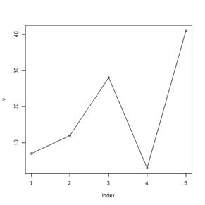
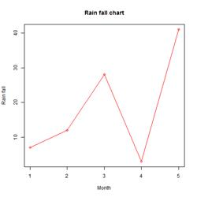
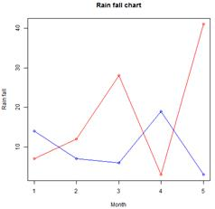

In a random collection of data from independent sources, it is generally observed that the distribution of data is normal. Which means, on plotting a graph with the value of the variable in the horizontal axis and the count of the values in the vertical axis we get a bell shape curve. The center of the curve represents the mean of the data set. In the graph, fifty percent of values lie to the left of the mean and the other fifty percent lie to the right of the graph. This is referred as normal distribution in statistics.
R has four in built functions to generate normal distribution. They are described below.
dnorm(x, mean, sd)
pnorm(x, mean, sd)
qnorm(p, mean, sd)
rnorm(n, mean, sd)
Following is the description of the parameters used in above functions –
1. x is a vector of numbers.
2. p is a vector of probabilities.
3. n is number of observations(sample size).
4. mean is the mean value of the sample data. It's default value is zero.
5. sd is the standard deviation. It's default value is 1.
dnorm()
This function gives height of the probability distribution at each point for a given mean and standard deviation.
# Create a sequence of numbers between -10 and 10 incrementing by 0.1.
x <- seq(-10, 10, by = .1)
# Choose the mean as 2.5 and standard deviation as 0.5.
y <- dnorm(x, mean = 2.5, sd = 0.5)
# Give the chart file a name.
png(file = "dnorm.png")
plot(x,y)
# Save the file.
dev.off()
When we execute the above code, it produces the following result −

pnorm()
This function gives the probability of a normally distributed random number to be less that the value of a given number. It is also called "Cumulative Distribution Function".
# Create a sequence of numbers between -10 and 10 incrementing by 0.2.
x <- seq(-10,10,by = .2)
# Choose the mean as 2.5 and standard deviation as 2.
y <- pnorm(x, mean = 2.5, sd = 2)
# Give the chart file a name.
png(file = "pnorm.png")
# Plot the graph.
plot(x,y)
# Save the file.
dev.off()
When we execute the above code, it produces the following result −

qnorm()
This function takes the probability value and gives a number whose cumulative value matches the probability value.
# Create a sequence of probability values incrementing by 0.02.
x <- seq(0, 1, by = 0.02)
# Choose the mean as 2 and standard deviation as 3.
y <- qnorm(x, mean = 2, sd = 1)
# Give the chart file a name.
png(file = "qnorm.png")
# Plot the graph.
plot(x,y)
# Save the file.
dev.off()
When we execute the above code, it produces the following result −

rnorm()
This function is used to generate random numbers whose distribution is normal. It takes the sample size as input and generates that many random numbers. We draw a histogram to show the distribution of the generated numbers.
# Create a sample of 50 numbers which are normally distributed.
y <- rnorm(50)
# Give the chart file a name.
png(file = "rnorm.png")
# Plot the histogram for this sample.
hist(y, main = "Normal DIstribution")
# Save the file.
dev.off()
When we execute the above code, it produces the following result −